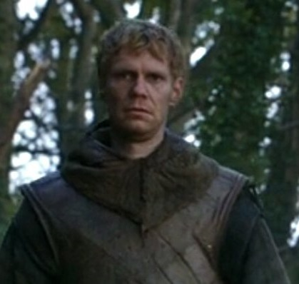

ГОЛОВНА
ГОЛОВНА ІСТОРІЯ
ІСТОРІЯ  МЕШКАНЦІ
МЕШКАНЦІ ПЛАН
ПЛАН ГАЛЕРЕЯ
ГАЛЕРЕЯ kononov1975so@gmail.com
kononov1975so@gmail.comМешканці замку Вінтерфел
| ЕДДАРД СТАРК, лорд Вінтерфела, Охоронець Півночі. |
Його сім'я і домочадці
 |
Його дружина, ЛЕДІ КЕЙТИЛІН, із дому Таллі |
Їх діти
| РОББ, спадкоємець Вінтерфелу, чотирнадцять років. | |
| САНСА, старша дочка, одинадцять років | |
 |
АРЬЯ, молодша дочка, дев'ять років. |
| БРАНДОН, семи років. | |
 |
РІКОН, малюк трьох років. |
| ДЖОН СНОУ, його бастард, юнак чотирнадцяти років. | |
| ТЕОН ГРЕЙДЖОЙ, його вихованець, наслідник Залізних Островів, фактично закладник. | |
 |
БЕНДЖЕН, його молодший брат, брат Нічної Варти. |
Його почет і слуги
 |
МЕЙСТЕР ЛЮВІН, радник, цілитель та вчитель. |
 |
ВЕЙОН ПУЛЬ, стюард Вінтерфелу. |
 |
ДЖЕЙНІ, його дочка, найближча подруга Санси. |
 |
ДЖОРІ КАССЕЛЬ, капітан гвардії. |
 |
СІР РОДРІК КАССЕЛЬ, майстер над зброєю, дядько Джорі. Кастелян. |
 |
БЕТ, його молодша дочка. |
 |
СЕПТА МОРДЕЙН, вихователька дочок лорда Еддарда. |
| СЕПТОН ШЕЙЛІ, зберігач замкової септи та бібліотеки. | |
|
ХАЛЛЕН, майстер над конями. |
|
ДЖОЗЕТ, конюх та дресирувальник коней. |
| ФАРЛЕН, майстер над псарнею. | |
| ПАЛЛА — дочка Фарлена, майстра над псарнею у Вінтерфелі. | |
|
ТОМ, також відомий як Том молодший, син Томарда, одного з гвардійців Старков. |
| СТАРА НЕН, оповідниця, колись няня. | |
| ХОДОР, її правнук, простодушний конюх. | |
|
ГЕЙДЖ, кухар. |
 |
МІККЕН, коваль і зброяр |
| ОША — дика жінка, яка подорожує на південь від стіни, щоб захиститися від Білих Ходоків. Вона захоплена Старками в «Грі престолів» та відвезена до Вінтерфелу. Зрештою її роблять посудомийкою та дають обмежену свободу. Вона стає близька до Брана Старка і часто дає йому поради. Няня Рікона. | |
| УОЛКАН – мейстер Вінтерфела післі Лювіна | |
| ТОММІ – цирульник в замку. Гине під час штурму замку. |
Гвардійці
| ХАРВІН, син Халлена, гвардієць. | |
| КОНЕР, гвардієць. | |
| УІЛ, гвардієць. | |
| ХАЛЛІС МОЛЛЕН, гвардієць. Капітан гвардії у Вінтерфеллі, призначений на посаду Роббом Старком, після того, як Джорі Кассель, який обіймав цю посаду раніше, вирушив з Еддардом Старком на південь. | |
| АЛІН, гвардієць. Капітан домашньої гвардії Еддарда Старка після смерті Джорі Касселя. Загинув у битві біля Шутовського Брода | |
|  | ДЕСМОНД, гвардієць. |
| КВЕНТ, гвардієць. | |
| ТОМАРД, гвардієць. Капітан домашньої гвардії Еддарда Старка після від'їзду Аліна. Був убитий одним із золотих плащів у тронній залі Червоного замку. | |
| ВАРЛІ, гвардієць. | |
|
Гвардійці - ДЖЕКС, ПОРТЕР, ХЬЮАРД, КЕЙН, ШАДД, ХЕНК, ТОМ. |

КОМЕНТАРІ
Лорд. Між королем і лицарями-ленниками перебувають лорди. Лорд присягає на вірність королю, проте може присягати і іншому лорду. Серед лордів є виняток: Мартелли із Сонячної Списа носять титул «принца (принцеси) Дорна», хоча за своїми повноваженнями дорівнюють лордам з інших королівств. Титул лорда, як і королівський, передається у спадок. Кожен лорд має своїх васалів, а ті, у свою чергу, мають своїх васалів. Кожним регіоном королівства керує так званий «лорд із великого дому», пов'язаний васальною залежністю лише з королем. Такі лорди відповідальні за керування своїми землями, підтримку королівського миру, справедливе і законне вирішення місцевих суперечок, а також своєчасне збирання податків, які належать короні. Деякі лорди мають титули, які належать лише їхнім будинкам: наприклад, будинок Ланністерів – це «щит Ланніспорту».
Загалом ієрархія звань та титулів у Вестеросі така:
- король;
- грандлорд регіону: лорд Мейс Тірелл - грандлорд Простір;
- лорд-прапороносець верховного лорда: Хайтауери - васали Тиреллов;
- лорд-васал лорда-прапороносця: Костейни - васали Хайтауерів;
- лицар-ленник (landed knight), що володіє власною землею і замком, але не має титулу лорда, приклад сир Юстас Осгрей;
- безземельний «межовий» лицар, який перебуває на службі у лорда або лицаря-ленника, приклад — сір Дункан Високий у молодості.

Лицар - важкоозброєний кінний воїн, носій дворянської лицарської традиції, що сягає часів андальського вторгнення у Вестерос і тісно переплетеної з вірою в Семерих. Лицарі займають важливе місце у феодальному суспільстві та культурі Вестероса, стоячи нижче лордів, але вище простолюду. Тяжка лицарська кіннота є головним аргументом у будь-якій війні Семи королівств, а подвигам і пригодам знаменитих лицарів присвячені багато пісні та книги. Лицар зобов'язаний служити взірцем честі, відваги і шляхетності, служити королю і державі і захищати слабких - на жаль, далеко не всі лицарі відповідають цьому ідеальному образу.
До лицарів звертаються "сiр" (англ. ser). Звання лицаря перестало бути спадковим і значить спадкового дворянства саме собою; законні діти лицаря успадковують його прізвище, а тому випадку, якщо син лицаря сам стає лицарем, — і герб. Будь-який лицар може присвятити в лицарі будь-якої людини, навіть простолюдина, проте звання лицаря вимагає чималих витрат — лицар зобов'язаний володіти дорогою зброєю, обладунками, кількома кіньми, вести відповідний лицарському званню спосіб життя, зазвичай пов'язаний з військовою службою і, в мирний час, турнірами.
Північні вершники (англ. Northern cavalry) - важкоозброєні кінні воїни на Півночі.
Тяжкоозброєні північні вершники багато в чому нагадують лицарів Півдня, проте не користуються лицарським титулуванням. Лицарство як таке тісно пов'язане з вірою в Семерих, тому жителі Вестероса, які дотримуються інших вірувань, уникають прийняття лицарських обітниць. З цієї причини у північних вершників немає жорстко формалізованого кодексу, посвяти та спеціального поводження. Тим не менш, функція, яку вони виконують на війні, така сама, як і у лицарів.
Стюард - посада в замках Семи Королівств. Стюард служить лорду дворецьким та керуючим господарством, допомагаючи лорду вести справи та займаючись господарськими питаннями; йому підкоряються слуги лорда. На відміну від каштеляна чи майстра над зброєю, ця посада не передбачає військових обов'язків — стюард не є воїном і не командує солдатами. У книгах також згадувалась посада сенешаля, але вона, ймовірно, є просто іншою назвою посади стюарду в деяких південних замках.
Стюард займається запасами замку і розповідає доходами та витратами. Це важлива посада: коли через від'їзд Вейона Пуля замок Вінтерфелл залишився без стюарда, мейстер Лювін нагадував Кейтілін Старк про необхідність призначити когось на цю посаду. Стюард займається розміщенням гостей замку та відводить їм відповідні покої; на урочистих прийомах він також виступає як глашатай, оголошуючи імена тих, хто прибуває або про те, що прийом закінчений і присутні можуть розійтися. Стюард Темнолісся по суті керував замком, доки брати Гловери були на війні. Продовольство, що прибуває до замку, направляють для обліку стюарду; якщо лорд робить замовлення у зброяра, розплачується з майстром стюард. Якщо лорд влаштовує турнір, стюард на його службі також може бути розпорядником ігор. Як і наглядачі над рабами в Есосі, стюарди можуть бути жорстокими до слуг.
Стюард може бути як простого, і знатного роду. Крістон Коль, знаменитий лицар, був сином стюарда, який служив Дондарріонам. На Залізних островах за старих часів невільники, які володіли мистецтвом читання, письма та рахунки, могли прислуговувати своїм залізничним господарям як стюарди. Тирелли протягом століть передавали у спадок посаду Верховного стюарду за королів з дому Гарденерів; багато хто з цих Верховних стюардів також служив довіреними особами, радниками та кастелянами Хайгардена. Нестор Ройс носив титул Високого стюарду Долини Аррен та Місячної Врати. Ерік Айронмейкер, призначений Еурон Грейджоєм на посаду намісника Залізних островів, носив титул «лорда-стюарда Залізних островів».
У Нічному Дозорі «орден стюардів» включає всіх дозорців, які займаються господарськими справами Дозору, чи то кухарі, ковалі чи слуги лицарів, і всі вони називаються стюардами. Їхній начальник носить титул лорда-стюарда або Першого стюарда.
Кастелян - посада в замках Вестероса: керуючий замком, який призначається на час відсутності лорда або у разі його частих відлучок. Посада каштеляна має військове значення — він є начальником гарнізону, підтримує мир і порядок у володіннях лорда, а разі нападу на замок організує його оборону. Як правило, каштеляна вибирають з числа присяжних лицарів, яким лорд добре довіряє, або з молодших родичів лорда, які не мають своїх земель і не успадковують їх.
Орден мейстерів об'єднує вчених людей, які перебувають у служінні у володарів Вестероса. Практично у кожному замку Семи королівств є свій вчений мейстер. Мейстери виконують роль наставників, радників, лікарів та зберігачів знання. Вони приносять обітниці служіння і безшлюбності, і на знак свого звання носять на шиї ланцюг, кожна ланка якого викована з іншого металу.
Майстер над зброєю — посада в замках Семи Королівств. Цю посаду обіймає досвідчений воїн, зазвичай лицар; в його обов'язки входить у мирний час навчати солдатів гарнізону військовій справі та володінню зброєю. Можливо, у веденні майстра над зброєю знаходиться арсенал замку. Це досить помітна посада, майстер над зброєю може бути призначений кастеляном без господарів замку. Майстри над зброєю навчають і панських дітей — так, Робб та Бран Старкі, Джон Сноу та Теон Грейджой вчилися володіти мечем у Родріка Касселя, майстра над зброєю у Вінтерфеллі. У більшості замків є свій майстер над зброєю, який призначає лорд замку. Відомо, що у Дозорі у Сіроводді майстра над зброєю немає.
Майстер над кіньми – посада у замках Вестероса. Майстер над конями зобов'язаний стежити за кіньми, які перебувають у довіреній йому стайні, а також займатися їх навчанням.
Майстер на псарні у Вінтерфеллі. Він управляє замковою псарнею та мисливськими собаками Старків; з 298 року його віданні також перебували і лютововки молодших Старків.
Kапітан гвардії (англ. Captain of the guards) - посада людини, яка очолює домашню гвардію. До обов'язків капітана входить командування гвардією, спостереження за виконанням наказів лорда. Часто капітани гвардій особисто супроводжують лордів та леді, яким вони служать. Якщо капітан гвардії знаходиться довгий час за межами замку свого лорда, на його місце може бути призначена інша людина. Командир гарнізону – аналогічна посада у деяких замках.
Септони і септи - священнослужителі Віри в Семерих, які присвятили своє життя релігії. Вони моляться семи богам андалів, проводять богослужіння та проповіді. Жінки, що присвятили себе Вірі, називаються септами — так само, як і семистенні храми, які є у всіх містах і замках, принаймні на південь від Перешийка. У кожному храмі є свій септон, але багато провінційних септонів не мають свого храму і здійснюють обходи дрібних сіл на великій території, відправляючи треби на місцях зупинки.
Домашня гвардія Старків - солдати та стражники на службі великого дому Старків. Як домашня гвардія вони
складають гарнізон Вінтерфелу і охороняють членів сімейства Старків, де б ті не знаходилися.
У період, коли Еддард Старк обіймав посаду правиці, його охорона називалася «гвардією правиці».